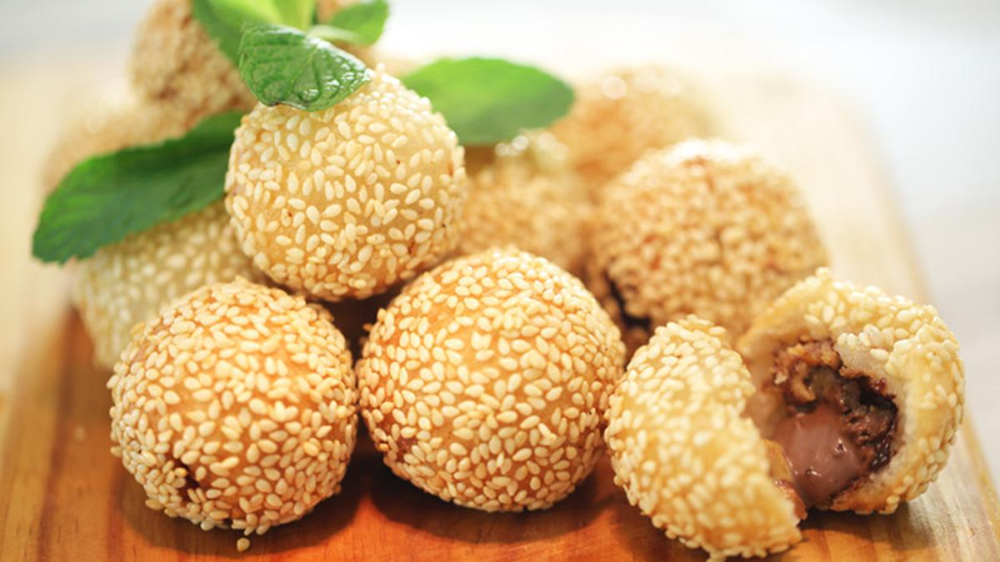

Resep Onde-Onde
Onde-onde adalah jajanan tradisional khas Indonesia yang terkenal dengan bentuk bulatnya yang berlapis wijen. Isiannya berupa pasta kacang hijau yang manis, dan tekstur luarnya yang renyah membuat onde-onde sangat digemari.
Bahan-bahan:
- 200 gram tepung ketan
- 50 gram tepung beras
- 100 gram gula pasir
- 100 gram kacang hijau kupas, rebus dan haluskan
- 100 ml air hangat
- Wijen secukupnya
- Minyak untuk menggoreng
Cara Membuat:
- Campur tepung ketan dan tepung beras, tambahkan air hangat hingga kalis.
- Ambil sedikit adonan, isi dengan pasta kacang hijau. Bentuk bulat.
- Gulingkan adonan ke wijen hingga tertutup rata.
- Panaskan minyak, goreng onde-onde dengan api kecil hingga matang dan berwarna keemasan.
- Angkat, tiriskan, dan sajikan.